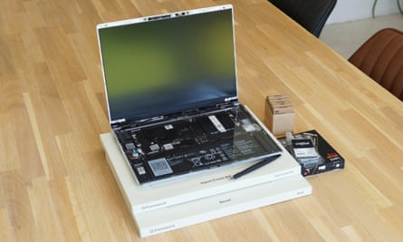
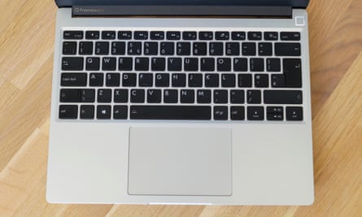
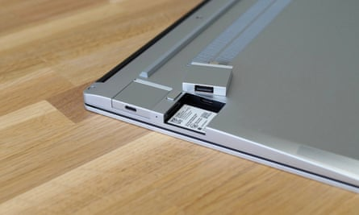
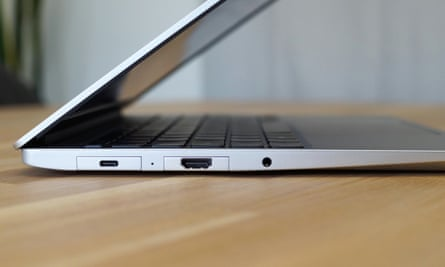
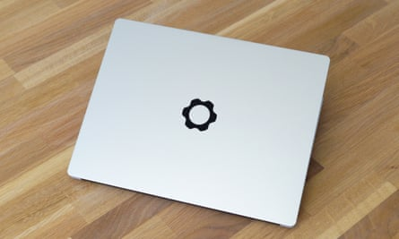

T he fixable and upgradeable premium Framework Laptop 13 has been improved all round for 2023 and is packed with small changes that are backwards compatible with older models, making a great laptop even better.
The original Framework broke new ground last year as a laptop designed to be taken apart and upgraded, and with a modular selection of ports, too. Crucially, the company followed through on promises to provide parts and upgrades for existing machines – first with 12th-gen Intel chips and now new 13th-gen Intel processors, with AMD Ryzen 7040 series chip options coming later this year.
DIY versions start at £849, where you install your own RAM, storage and operating system.Photograph: Samuel Gibbs/The Guardian
But for those who don’t already have a Framework 13 sitting on their desks, these improved parts have been rolled into new pre-built options, with Windows 11 starting at £1,049 ($1,049).
Physically, little has changed, so that the new parts are compatible with older machines. The laptop is thin, light and made of recycled aluminium. It looks and feels premium.
The screen is the same crisp and bright panel as before, but now has a matt rather than gloss coating, which significantly reduces glare and reflections. The new, more robust-feeling screen hinges still open to a full 180 degrees, which is very handy for using the laptop in a stand.
The keyboard is good, with plenty of key travel for a satisfying typing experience, while the large glass trackpad is smooth and precise.Photograph: Samuel Gibbs/The Guardian
The laptop has new, louder stereo speakers, which are still fairly tinny compared with the best, but fine for watching YouTube or taking meetings. A good 1080p webcam is at the top of the screen, with a physical switch for privacy. If you don’t like the black screen bezel, you can swap it for various colours, too.
Specifications
- Screen: 13.5in LCD 2256 x 1504 (60Hz; 201 PPI)
- Processor: Intel Core i5 or i7 (13th generation)
- RAM: 8, 16, 32 or 64GB
- Storage: 256, 512GB, 1, 2 or 4TB
- Operating system: Windows 11 Home or Pro
- Camera: 1080p front-facing
- Connectivity: wifi 6E, Bluetooth 5.3, headphones, fingerprint scanner + choice of 4 ports: USB-C (USB4/Thunderbolt 4), USB-A, HDMI, DisplayPort, ethernet, microSD
- Dimensions: 296.6 x 229.0 x 15.9mm
- Weight: 1.3kg
Ports and power
Press the button on the bottom of the laptop to unlock the module and swap the port to whichever variation you need.Photograph: Samuel Gibbs/The Guardian
The Laptop 13’s modular ports are still a great idea. Choose between any combination of USB-4/Thunderbolt 4, USB-A, HDMI, DisplayPort, ethernet, microSD and expandable storage drives, and swap them as you need. With most costing less than £20 each, they are cheap enough to keep a collection for different tasks.
The 13th-gen Intel Core i7, as tested in the “performance” version of the laptop with 16GB of RAM, was all round an improvement on the 11th-gen chips tested last year.
It was certainly fast enough to handle any general computing task, keeping up with rivals for power. It won’t handle high-end gaming, but managed a bit of Command & Conquer Remastered and various other older or lighter titles just fine.
It also ran a lot cooler than the previous version, with the fans generally staying silent while browsing and general computing, which was most welcome.
Framework also released a higher-capacity battery that stores 11% more energy in the same physical size and ships in all but the cheapest models. It still won’t win any longevity awards, but the laptop managed a good eight to nine hours of productivity work in Chrome, Windows Mail, Evernote and various other light apps. That is at least an hour longer than the previous version.
Sustainability
There’s a permanent headphones socket in the side of the laptop, while the rest of the ports are swappable.Photograph: Samuel Gibbs/The Guardian
Framework rates the battery to maintain at least 80% of its original capacity for at least 1,000 full charge cycles. It can easily be replaced along with all the rest of the components , including the RAM and SSD. The first-gen laptop was awarded 10 out of 10 for repairability and the 2023 model praised by the specialists iFixit for its ease of upgrade.
Framework sells replacement parts and upgrades through its marketplace, but also supports third-party parts. The laptop contains recycled aluminium and plastic in most components.
Price
The Framework Laptop 13 is available as a pre-built, ready-to-use machine or in a DIY edition.
Pre-built “base” machines with Windows 11, an Intel Core i5-1340P, 8GB of RAM and 256GB of storage start at £1,049 ($1,049). The performance model as tested with an i7-1360P costs £1,469 ($1,469) with 16GB of RAM and 512GB of storage. DIY editions start at £849 .
For comparison, the Dell XPS 13 Plus starts at £1,348.99, the Microsoft Surface Laptop 5 starts at £999 and the Apple MacBook Air M2 starts at £1,249
Verdict
Framework has delivered on its promise of upgrades for its existing machines which, when put together, create a more refined machine in the Laptop 13.
The 13th-gen Intel chips run cooler, helping the laptop to stay quieter and offering plenty of performance. But the other refinements to the hinges, speakers, battery and screen improve the experience just as much. The swappable ports remain an excellent idea.
The battery life is still far short of the best in the business, but is now long enough for a work day. A touchscreen would be nice but isn’t essential. And you can certainly get better-looking mainstream rivals.
But the 2023 Framework Laptop 13 is an excellent, adaptable and upgradable marvel suitable for more than just PC enthusiasts.
Pros: swappable ports, repairable and upgradeable design, great performance, decent battery life, contains recycled aluminium and plastic, well-made, good fingerprint scanner, good screen, great webcam, good keyboard and trackpad. Cons: no touchscreen, lid a little flimsier than the rest of the body, short availability, with wait time for purchasing new machines.
The aluminium lid looks and feels great, but is slightly more flexible than some premium rivals.Photograph: Samuel Gibbs/The Guardian